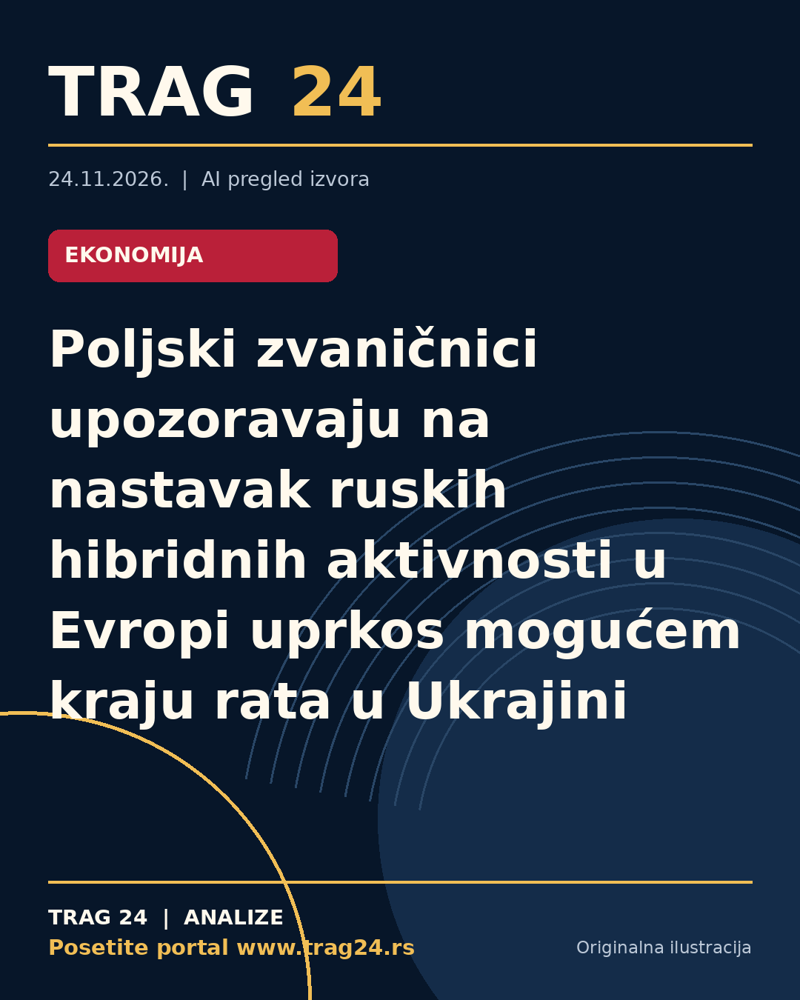

Poljski zvaničnici upozoravaju na nastavak ruskih hibridnih aktivnosti u Evropi uprkos mogućem kraju rata u Ukrajini

ŠTA SE DOGODILO
Poljski ministar zadužen za obaveštajne službe Tomaš Semonjak upozorio je da ruska kampanja hibridnih aktivnosti i sabotaža protiv evropskih zemalja može da se nastavi bez obzira na ishod rata u Ukrajini. Semonjak je naveo da ruske operacije uključuju napade na infrastrukturu poput železnice, komunikacionih sistema i vojnih objekata, sa ciljem ometanja pomoći Ukrajini i zastrašivanja evropskih država.
HRONOLOGIJA
U poslednjim mesecima došlo je do intenziviranja ruskih aktivnosti koje više nisu ograničene samo na podmetanja požara već obuhvataju i ozbiljnije napade poput sabotaža železničke infrastrukture. Poljska je posebno izložena ovim aktivnostima jer predstavlja ključno tranzitno čvorište za vojnu i humanitarnu pomoć Ukrajini. Nedavno su na teritoriji Poljske pronađeni delovi ruskih krstarećih raketa nakon što su projektili i dronovi prešli u poljski vazdušni prostor, što je izazvalo reakciju NATO-a uključujući raspoređivanje nadzornog aviona AWACS.
ŠTA NAVODE IZVORI
Poljski zvaničnici ističu da ruske mere imaju za cilj ekonomsko iscrpljivanje Ukrajine i slabljenje otpornosti NATO-a i evropskih država. Semonjak je naveo da teško može da se zamisli da bi mirovni sporazum u Ukrajini zaustavio takve operacije, jer Rusija ne želi da prihvati status kvo uspostavljen nakon Hladnog rata i nastoji da povrati uticaj u regionu. Takođe se navodi da Moskva može pokušati da uključi više zemalja u sukob ili utiče na njihove stavove prema ratu i podršci Ukrajini.
ŠTA JE POTVRĐENO
Ruski projektili i dronovi su ušli u poljski vazdušni prostor, a njihovi ostaci pronađeni su unutar Poljske. Poljska je dobila i dobiće dalju pomoć NATO saveznika u jačanju bezbednosti na istočnoj granici. Incidenti su primećeni kao mogući pokušaji testiranja reakcije Poljske i NATO-a. Rusija je negativno reagovala na redeploje snaga NATO-a u istočnoj Evropi i tražila povlačenje na nivo iz 1997. godine, ali ovi zahtevi nisu prihvaćeni.
ŠTA NIJE POTVRĐENO
Niti jedan od izvora nije naveo potvrdu o konkretnim ishodima mogućeg mirovnog sporazuma u Ukrajini ili o tačnim planovima Rusije u vezi sa širenjem hibridne agresije nakon eventualnog završetka rata. Ruske vlasti nisu odgovorile na zahteve za komentar o optužbama za sabotaže. Takođe nije potvrđeno da li je upad ruskih letelica u poljski vazdušni prostor bio nameran, mada zvaničnici smatraju da je verovatnoća slučajnosti minimalna.
ŠTA OSTАJE OTVORENO: Ostaje neizvesno na koji način i u kolikoj meri bi postizanje mirovnog sporazuma moglo uticati na intenzitet i opseg ruskih hibridnih operacija u Evropi. Takođe, još uvek se razmatraju mogući odgovori NATO-a i evropskih zemalja na ovu pretnju, kao i dugoročne posledice za bezbednosnu arhitekturu regiona. Perspektiva budućeg bezbednosnog dijaloga između Rusije, Ukrajine i evropskih saveznika, uključujući pitanja prisustva NATO-a u istočnoj Evropi, ostaje neizvesna.
Izvori
- https://www.kurir.rs/planeta/10171751/poljska-mir-u-ukrajini-nece-da-zaustavi-ruske-sabotaze-u-evropi
- https://www.b92.net/info/svet/287755/poljska-mir-u-ukrajini-nece-da-zaustavi-ruske-sabotaze-u-evropi/vest
Ova analiza je pripremljena uz pomoć veštačke inteligencije na osnovu javno dostupnih izvora. Navodi izvora nisu nužno nezavisno potvrđeni.